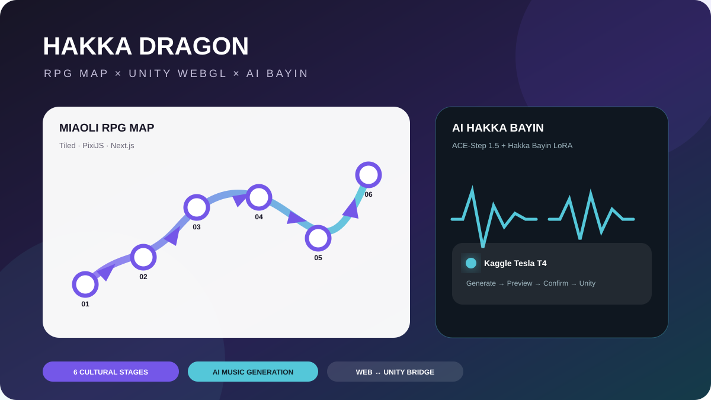

畢業專題核心功能完成2025.07–2026.09
跟著龍走－苗栗𪹚龍文化互動學習平台
HAKKA DRAGON · CULTURAL INTERACTIVE LEARNING PLATFORM
以苗栗𪹚龍文化為核心，將六部曲儀式流程轉化為可探索、可互動的數位學習體驗。系統整合 Tiled + PixiJS 的網頁 RPG 地圖、Unity WebGL 六部曲任務與ACE-Step 1.5 + Hakka Bayin LoRA 的 AI 客家八音生成。

目前狀態：專題核心功能已完成並可作為作品集封版。現階段仍保留的工作屬於正式營運強化，例如把 Kaggle Quick Tunnel 換成固定 GPU 服務、把生成音檔改存雲端物件儲存；這些不影響目前專題展示與系統流程。
01 · PROJECT OVERVIEW
專案概觀
- 主題
- 苗栗𪹚龍文化數位學習與觀光互動
- 核心體驗
- 客家八音 → 苗栗市 RPG 地圖探索 → 六部曲文化任務 → 完成旅程
- 六部曲
- 糊龍、祥龍點睛、迎龍、跈龍、𪹚龍、化龍返天
- 前端
- Next.js 16、React 19、PixiJS 8、pixi-viewport
- 遊戲
- Unity WebGL、C#、react-unity-webgl
- AI
- ACE-Step 1.5 + Hakka Bayin LoRA、MediaPipe Tasks Vision、客語發音特徵比對
- 狀態管理
- Product State / LocalStorage：六部曲進度、八音設定、生成音樂 URL 與相關參數
02 · MY ROLE
我的角色
團隊 PM / 系統整合
統整六部曲、RPG 地圖、AI 客家八音與 Web / Unity 模組的開發進度，處理跨模組契約、測試與整合。
UI/UX / 前端互動
規劃使用者從八音體驗、地圖探索到六部曲任務的操作流程，並參與前端畫面與互動設計。
RPG 地圖整合
以 Tiled 製作苗栗市 RPG 場景，搭配 PixiJS / Next.js 建立角色移動、文化節點與任務入口。
AI / WebGL 串接
整合 ACE-Step 生成服務與 Unity WebGL 任務，使生成的八音、遊戲進度與地圖狀態能在同一產品流程中協作。
03 · RPG MAP
苗栗市 RPG 地圖
地圖不是單純導覽頁，而是六部曲旅程的主要操作介面。Tiled 負責場景與圖層配置，PixiJS 負責網頁端 2D 渲染與角色互動，Next.js 管理 UI、任務卡與產品狀態。
- Tiled Map Editor：編排地形、建築、碰撞區與節點素材。
- PixiJS / pixi-viewport：角色移動、鏡頭、節點狀態與地圖渲染。
- Next.js / React：任務卡、地圖介面、AI 服務與 Unity Stage Host。
- Product State：依 completedStageIds 控制六部曲的完成狀態與下一階段解鎖。
04 · UNITY WEBGL
六部曲互動任務
01 糊龍文化知識卡、教學、自訂著色
→02 祥龍點睛七步點睛儀式與口訣
→03 迎龍迎龍納福與店家互動
04 跈龍客語翻牌與發音挑戰
→05 𪹚龍MediaPipe Pose 舞龍動作辨識
→06 化龍返天移動火把、燃燒動畫與結尾
整合方式：地圖透過 Web ↔ Unity Bridge 啟動指定 Stage；Unity 完成任務後再由 completion bridge 回寫 Product State，避免每個 Unity mission 自己直接修改網頁進度。
05 · AI HAKKA BAYIN
AI 客家八音生成
使用者可以為六部曲分別選擇樂器並生成客家八音，試聽後確認使用，確認的音樂再由網站傳給對應 Unity 任務播放。
使用者選擇樂器六部曲各自保存設定
→Next.js Server API同源 API，不暴露 GPU 服務網址
→Kaggle Tesla T4ACE-Step 1.5 + Hakka Bayin LoRA
生成 MP3Server 取得生成音訊
→試聽 / 確認Product State 保存 URL 與生成參數
→Unity 六部曲stage music manifest 套用該部曲音樂
目前暫存：開發版由 Next.js Server 將生成 MP3 暫存於網站 generated 音訊目錄；瀏覽器 Product State 只保存 audioUrl、seed、generationId、樂器與模型資訊，不把 MP3 本體塞進 LocalStorage。
06 · SYSTEM ARCHITECTURE
系統整合架構
Next.js / ReactUI、音樂流程、API、Product State
→Tiled + PixiJS Map苗栗市 RPG 探索與六部曲節點
→Unity WebGL六部曲文化互動任務
AI Music BackendKaggle T4 / ACE-Step / LoRA
→Next.js ServerHealth、Job Polling、Audio Fetch
→Product StateMusic + Progress + Appearance
07 · TOOLS & TECHNOLOGIES
使用工具與技術
Tiled Map EditorPixiJS 8pixi-viewportNext.js 16React 19
Unity WebGLC#react-unity-webglMediaPipe Tasks VisionACE-Step 1.5
Hakka Bayin LoRAKaggle Tesla T4Cloudflare TunnelGit / GitHub
AI 開發輔助：Claude 與 Codex 用於程式整合、除錯、回歸測試與文件整理；它們屬於開發工具，不是使用者操作專題時的 runtime AI 模組。
08 · STATUS & NEXT
完成狀態與後續
目前可視為完成
- 苗栗市 RPG 地圖與六部曲節點流程
- 六部曲 Unity WebGL 任務與完成回報
- AI 客家八音生成、試聽、確認與 Unity 套用
- Product State 跨頁狀態整合
- Stage 5 MediaPipe Pose 與 Stage 4 發音挑戰
正式營運時再強化
- Quick Tunnel → 固定 GPU API / 正式部署
- 本機 generated 音檔 → 雲端 Object Storage
- Memory Job Store → 持久化佇列 / 資料庫